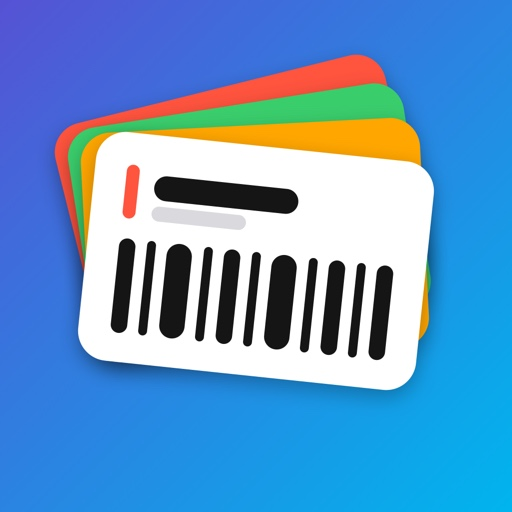
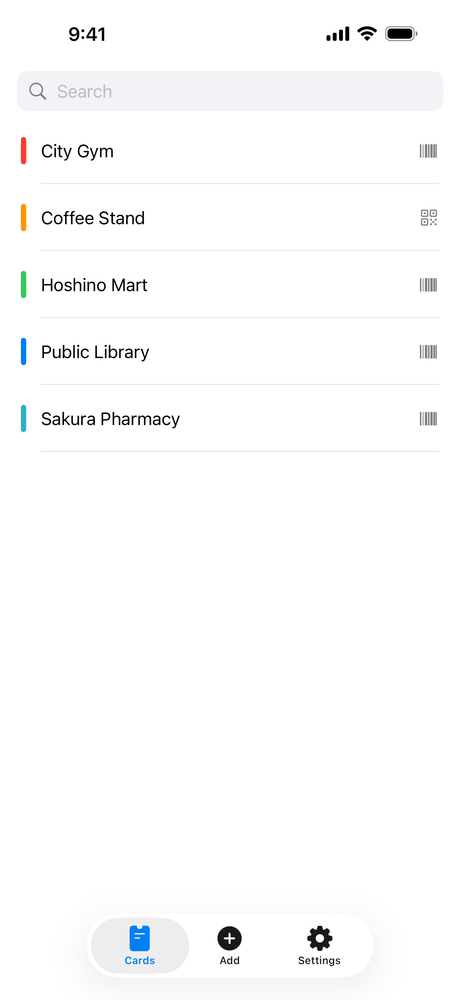
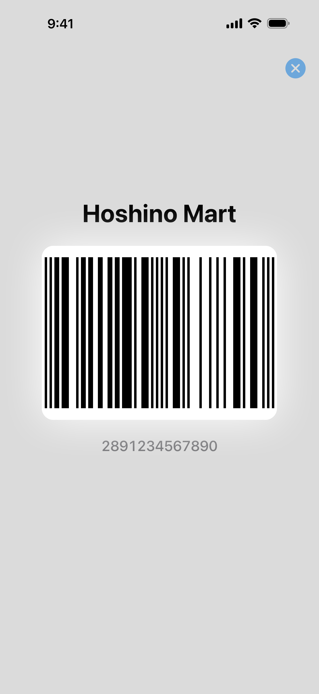
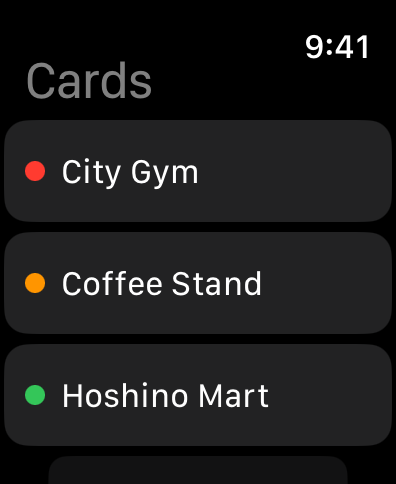
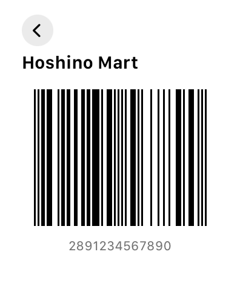
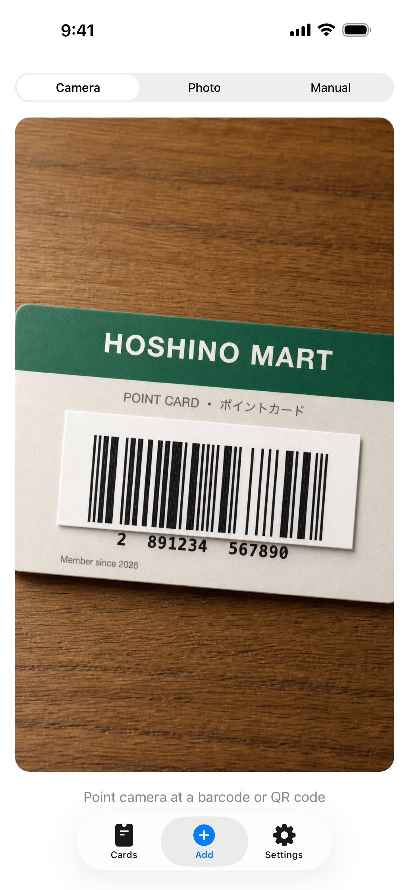
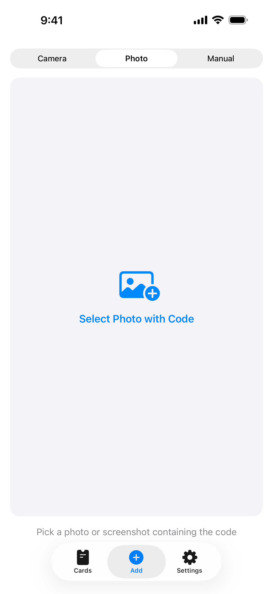
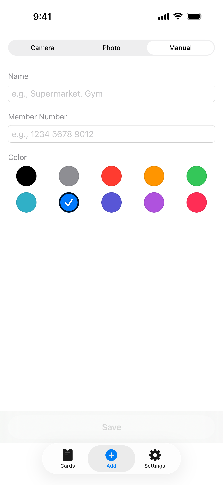
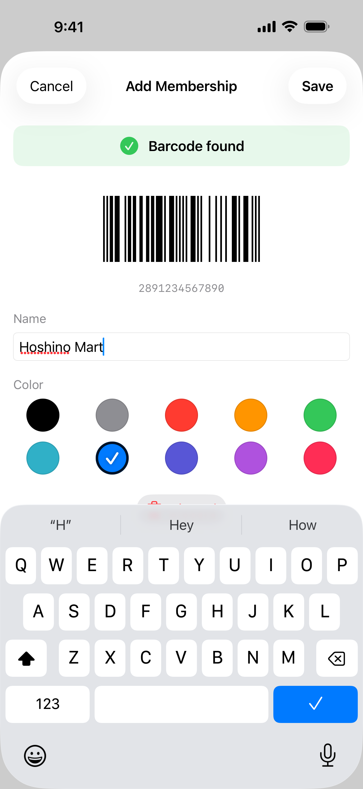

Membership Navi
يجمع Membership Navi بطاقات العضوية وبطاقات الولاء وبطاقات النقاط في تطبيق واحد، ويعرض الباركود الخاص بها تمامًا كما تم مسحه. تتم مزامنة بطاقاتك عبر iCloud مع جميع أجهزتك، بما فيها Apple Watch.
تنزيل

الدعم
هل لديك سؤال، أو وجدت خللًا، أو تحتاج مساعدة في التطبيق؟ تواصل معنا. نقرأ كل رسالة.
قبل أن تكتب
بعض الفحوصات السريعة للمشكلات الشائعة:
- الكاميرا لا تعمل؟ انتقل إلى إعدادات iPhone ← الخصوصية والأمان ← الكاميرا ← فعّل الوصول لتطبيق Membership Navi.
- البطاقات لا تظهر على جهاز آخر؟ تأكد من تسجيل الدخول على الجهازين بحساب Apple نفسه مع تفعيل iCloud. يعرض تبويب الإعدادات في التطبيق ما إذا كانت مزامنة iCloud تعمل. قد تستغرق المزامنة الأولى دقيقة.
- الباركود لا يُقرأ عند الدفع؟ تُعرض الرموز تلقائيًا بسطوع إضافي أثناء عرضها (يمكنك إيقاف ذلك من الإعدادات). إذا رفض ماسح متجر معيّن رمزًا ما، راسلنا باسم المتجر ونوع البطاقة وسنبحث في الأمر. فإعادة إنتاج الرمز بدقة هي مهمة هذا التطبيق كلها.
- تظهر رسالة «تعذّر إنشاء الرمز» على الساعة؟ افتح تلك البطاقة مرة واحدة على iPhone وانتظر قليلًا حتى تكتمل مزامنة iCloud، ثم حاول مجددًا على الساعة.
- تخفت شاشة الساعة قبل أن يقرأها الماسح؟ قد يؤدي تدوير معصمك نحو الماسح إلى إخفات watchOS للشاشة، ولا يُسمح للتطبيقات بمنع ذلك. المس الشاشة عندما تكون أمام الماسح لتعود إلى كامل سطوعها.
الأسئلة الشائعة
- هل سيُقرأ الباركود فعلًا مثل بطاقتي الحقيقية؟
نعم. يتذكر Membership Navi تنسيق الباركود وإعداداته بدقة وقت المسح (Code 128 وEAN وCodabar وQR وغيرها)، ويعيد إنشاء الرمز بالإعدادات نفسها، لا بترميز عام. - ماذا يحدث إذا فقدت هاتفي أو أعدت تثبيت التطبيق؟
تُحفظ بطاقاتك في iCloud الخاص بك. سجّل الدخول بحساب Apple نفسه وستعود تلقائيًا. - هل يعمل على Apple Watch؟
نعم. يعرض تطبيق الساعة بطاقاتك على شاشة بيضاء لتسهيل المسح، ويحتفظ بنسخته الخاصة من بطاقاتك، فيعمل حتى عندما لا يكون iPhone معك. - هل يحتاج إلى اتصال بالإنترنت؟
فقط لمزامنة iCloud. عرض البطاقات ورموزها يعمل دون اتصال تمامًا. - هل يستطيع المطوّر رؤية بطاقاتي؟
لا. تُحفظ بياناتك على أجهزتك وفي قاعدة بيانات iCloud الشخصية التي لا يصل إليها أحد غيرك. لا خوادم لدينا، ولا حسابات، ولا تحليلات. - ما أنواع الرموز المدعومة؟
QR وCode 128 وCode 39 وCode 93 وEAN-13 وEAN-8 وUPC-E وITF وCodabar وPDF417 وAztec، بالإضافة إلى أرقام العضوية العادية. - لماذا لا يمكنني تعديل رقم رمز ممسوح؟
هذا مقصود. يُعاد إنتاج الرمز الممسوح تمامًا كما هو على بطاقتك، وتعديله يُفقده هذا الضمان. لتغيير رمز بطاقة، امسح البطاقة من جديد. أما البطاقات التي أدخلتها يدويًا فتبقى قابلة للتعديل. - هل يصل التطبيق إلى مكتبة صوري بالكامل؟
لا. تختار صورة واحدة عبر أداة اختيار الصور في النظام، ولا يحصل التطبيق أبدًا على حق الوصول إلى مكتبتك.
الدليل




بطاقاتك
يعرض تبويب البطاقات كل ما حفظته مرتبًا حسب الاسم. اضغط على بطاقة لعرض رمزها. يبحث حقل البحث أعلى القائمة في أسماء البطاقات وأرقامها معًا، وهو أسرع طريقة للتنقل في قائمة طويلة.
أرقام البطاقات لا تظهر في القائمة عن قصد، وإلا لرأى أي شخص ينظر إلى شاشتك كل أرقام عضويتك دفعة واحدة.
عرض بطاقة
اضغط على بطاقة لتملأ الشاشة، مع الرقم أسفلها لتتمكن من قراءته إذا رفضه الماسح. يُعرض الرمز أيضًا بسطوع إضافي أثناء ظهوره، لأن ماسحات المتاجر تقرأ الرمز الساطع بسهولة أكبر. على أجهزة iPhone ذات شاشة HDR يضيء الرمز وحده، فلا تبهرك بقية الشاشة. وإذا كانت شاشتك خافتة جدًا يرتفع سطوعها قليلًا أيضًا، ثم يعود إلى ما كان عليه عند الخروج.
يُرسم الرمز بحيث يقع كل خط على عدد صحيح من بكسلات الشاشة. قد يبدو ذلك تدقيقًا زائدًا، لكنه ما يتيح لماسحات الليزر عند الدفع قراءة الشاشة: فهي تفك الترميز من النِّسب بين عروض الخطوط، والباركود الممطوط بجزء من بكسل تصبح خطوطه غير متساوية.
إضافة بطاقة



يوفّر تبويب إضافة ثلاث طرق. اضغط على أداة التبديل في الأعلى، أو اسحب بينها:
- الكاميرا: وجّهها نحو الباركود أو رمز QR على بطاقة حقيقية.
- صورة: اختر صورة أو لقطة شاشة تحتوي على الرمز.
- يدوي: اكتب رقم العضوية، للبطاقات التي هي مجرد رقم.
أثناء المسح لا تعرض الشاشة سوى الكاميرا، بلا نماذج لتعبئتها. وعند العثور على رمز يؤكده التطبيق ويعرض لك الرقم المقروء، لتطابقه مع البطاقة في يدك قبل الحفظ. ثم تمنحها اسمًا ولونًا. وإذا بدا شيء غير صحيح، يعيدك زر تجاهل مباشرة إلى الكاميرا.

يمكنك أيضًا إرسال رمز من تطبيق آخر: التقط لقطة شاشة له، واضغط على مشاركة، واختر Membership Navi. يمسح التطبيق الصورة ويفتح شاشة التأكيد نفسها.
التعديل والحذف
اسحب بطاقة إلى اليمين لحذفها، أو إلى اليسار لتعديلها. يتيح لك التعديل تغيير الاسم وشريط اللون.
في البطاقة الممسوحة يظهر الرقم وتنسيقه لكن لا يمكن تغييرهما. وهذا مقصود: يعيد التطبيق إنتاج الرمز تمامًا كما كان على بطاقتك، وتعديل القيمة يُخلّ بهذا الوعد بصمت. لتغيير رمز بطاقة ممسوحة، أضف البطاقة من جديد بمسحها. أما البطاقات التي أدخلتها يدويًا فتبقى قابلة للتعديل بالكامل.
Apple Watch
يعرض تطبيق الساعة البطاقات نفسها، ويُظهر أيًّا منها على شاشة بيضاء، وهو أقصى سطوع يسمح به watchOS. ويحتفظ بنسخته الخاصة، فيعمل وiPhone في حقيبتك أو في المنزل.
تظهر البطاقات الجديدة على الساعة بعد أن يُزامنها iCloud، وهو ما يستغرق عادةً لحظات. إذا ظهرت رسالة بأن البطاقة تعذّر إنشاء رمزها، افتحها مرة على iPhone وامنح المزامنة بعض الوقت.
الإعدادات
يتحكم خيار تفتيح الرموز في السطوع الموصوف أعلاه. أوقفه إذا كنت تفضّل ألا يغيّر التطبيق شاشتك.
مزامنة iCloud سطر حالة وليس مفتاحًا. يُظهر ما إذا كانت بطاقاتك تُزامَن، حتى لا يمر أي تعطل دون أن تلاحظه: إذا ذكر أنك لم تسجّل الدخول، سجّل الدخول إلى iCloud من تطبيق الإعدادات، وستُزامَن بطاقاتك وتُستعاد إذا أعدت التثبيت.
قانوني
سياسة الخصوصية
آخر تحديث: يوليو 2026
مقدمة
بُني Membership Navi على مبدأ بسيط: بياناتك ملك لك. توضح سياسة الخصوصية هذه المعلومات التي يصل إليها التطبيق وكيفية التعامل معها.
الوصول إلى الكاميرا
يستخدم التطبيق كاميرا جهازك لمسح الباركود ورموز QR على بطاقاتك. تتم معالجة بث الكاميرا بالكامل على جهازك، ولا تُحفظ أي صور أو إطارات فيديو أو تُرفع أو تُشارك مع أي أحد.
الوصول إلى الصور
عند إضافة بطاقة من صورة، تختار صورة واحدة عبر أداة اختيار الصور في النظام. لا يحصل التطبيق أبدًا على حق الوصول إلى مكتبة صورك.
بطاقاتك وiCloud
تُحفظ البطاقات التي تضيفها على جهازك، وإذا كنت تستخدم iCloud تُزامَن عبر قاعدة بيانات iCloud الشخصية (Apple CloudKit) لتظهر على جميع أجهزتك، بما فيها Apple Watch، وتُستعاد عند إعادة تثبيت التطبيق. تنتمي قاعدة البيانات هذه إلى حساب Apple الخاص بك: لا يمكننا قراءة محتوياتها أو الوصول إليها أو مشاركتها. ولا نشغّل أي خوادم خاصة بنا.
لا جمع للبيانات
لا نجمع أي معلومات شخصية ولا نخزنها ولا نعالجها. لا يتطلب التطبيق حسابًا أو أي نوع من التسجيل، ولا يحتوي على أي تحليلات أو إعلانات أو تتبع من أي نوع.
المشتريات
تتولى Apple المشتريات بالكامل عبر App Store. لا نتلقى أبدًا معرّف Apple الخاص بك أو طريقة الدفع أو أي معلومات دفع أخرى.
خصوصية الأطفال
لأننا لا نجمع أي بيانات شخصية، يلتزم Membership Navi بقانون حماية خصوصية الأطفال على الإنترنت (COPPA) واللوائح المماثلة حول العالم.
التغييرات على هذه السياسة
قد نقوم بتحديث سياسة الخصوصية هذه من وقت لآخر. تسري التغييرات فور نشرها. ننصحك بمراجعة هذه الصفحة دوريًا.
تواصل معنا
لأي استفسارات حول سياسة الخصوصية هذه: support [at] hoshinosoftware [dot] com
شروط الخدمة
آخر تحديث: يوليو 2026
قبول الشروط
بتنزيل Membership Navi أو استخدامه، فإنك توافق على الالتزام بشروط الخدمة هذه. إذا لم توافق، يُرجى عدم استخدام التطبيق.
الترخيص
تمنحك Hoshino Software ترخيصًا شخصيًا وغير قابل للنقل وغير حصري لاستخدام Membership Navi على أجهزة Apple الخاصة بك وفقًا لهذه الشروط وشروط خدمة App Store من Apple.
المشتريات والمبالغ المستردة
تتولى Apple الفوترة والمبالغ المستردة وفق شروط App Store، وتُقدَّم طلبات الاسترداد عبر Apple لا عبرنا.
الاستخدام المسموح
لا يجوز لك استخدام Membership Navi إلا لأغراض مشروعة ومع البطاقات والرموز المصرّح لك باستخدامها. وتوافق على عدم استخدام التطبيق بأي طريقة تنتهك القوانين أو اللوائح المعمول بها.
إخلاء الضمان
يُقدَّم Membership Navi «كما هو» دون أي ضمان من أي نوع، صريحًا كان أو ضمنيًا. لا نضمن أن يكون التطبيق خاليًا من الأخطاء أو متاحًا دون انقطاع أو مناسبًا لأي غرض معيّن، ولا أن يقبل كل ماسح تابع لجهة خارجية الرمز المعروض.
تحديد المسؤولية
إلى أقصى حد يسمح به القانون المعمول به، لن تكون Hoshino Software مسؤولة عن أي أضرار مباشرة أو غير مباشرة أو عرضية أو خاصة أو تبعية ناجمة عن استخدامك لـ Membership Navi أو عدم قدرتك على استخدامه.
التغييرات على هذه الشروط
قد نقوم بتحديث شروط الخدمة هذه من وقت لآخر. استمرار استخدام التطبيق بعد نشر التغييرات يُعدّ قبولًا للشروط المعدَّلة.
القانون الحاكم
تخضع هذه الشروط لقوانين الولاية القضائية التي تعمل فيها Hoshino Software.
تواصل معنا
لأي استفسارات حول شروط الخدمة هذه: support [at] hoshinosoftware [dot] com